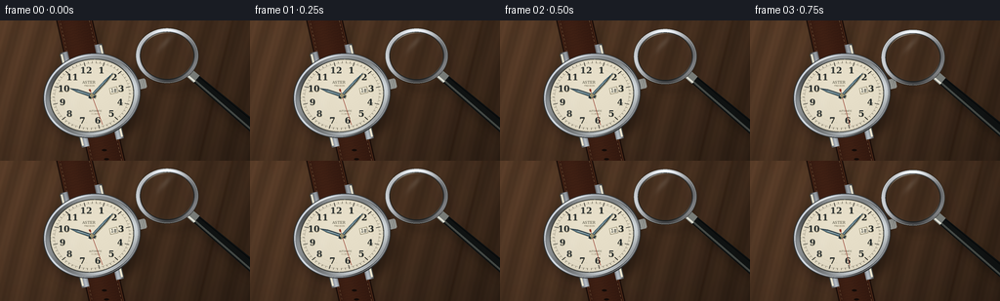
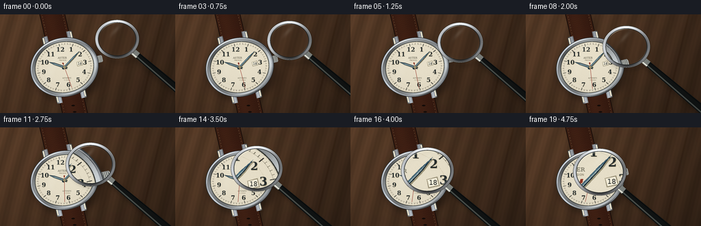

CODING AGENTS AS PIXEL WORLD MODELS
traex/GPT-6.1-Sol · phygen_067
点击播放 · 原生 RGB 像素
逐轮保存的候选
回放视频、检查图与代码变化。
每份候选均可单独播放。实际图片检查记录在下方工具轨迹中。
候选 01播放与检查图
点击播放 · 原生 RGB 像素


展开代码变化
--- 上一保存版本
+++ 本次保存版本
@@ -0,0 +1,260 @@
+from pathlib import Path
+import json
+import math
+import numpy as np
+from PIL import Image, ImageDraw, ImageFont, ImageFilter
+import artifact_io
+
+ROOT = Path(__file__).resolve().parent
+SPEC = json.loads((ROOT/'task_spec.json').read_text())
+W,H = SPEC['width'], SPEC['height']
+S = 4
+WW,HH = W*S,H*S
+rng = np.random.default_rng(67)
+Y,X = np.mgrid[0:HH,0:WW].astype(np.float32)
+X /= S; Y /= S
+
+# Watch plane: a modest perspective foreshortening and a rotated leather strap.
+CX,CY=94.0,77.0
+ANG=math.radians(-13)
+CA,SA=math.cos(ANG),math.sin(ANG)
+u=(X-CX)*CA+(Y-CY)*SA
+v=(-(X-CX)*SA+(Y-CY)*CA)/.86
+rad=np.sqrt(u*u+v*v)
+phi=np.arctan2(v,u)
+
+def point(a,b):
+ return ((CX+CA*a-SA*b*.86)*S,(CY+SA*a+CA*b*.86)*S)
+
+def poly(draw, coords, fill):
+ draw.polygon([point(a,b) for a,b in coords],fill=fill)
+
+def font(size, serif=False, bold=False):
+ fam='DejaVuSerif' if serif else 'DejaVuSans'
+ return ImageFont.truetype('/usr/share/fonts/truetype/dejavu/'+fam+('-Bold' if bold else '')+'.ttf',max(1,round(size*S)))
+
+def blend(arr, color, mask):
+ m=np.clip(mask,0,1)[...,None]
+ arr *= (1-m)
+ arr += np.asarray(color,np.float32)*m
+
+# A textured walnut surface, with elongated growth rings and raking warm light.
+z = X+.24*Y
+wood = np.sin(z*.225+2*np.sin(Y*.013)+.55*np.sin(z*.041))
+wood += .34*np.sin(z*1.15+.7*np.sin(Y*.024))
+wood += .18*np.sin(z*3.3+Y*.032)
+noise = rng.normal(0,1,(HH,WW)).astype(np.float32)
+light = 1.10-.0013*X-.0012*Y
+bg = np.stack([82+wood*7+noise*.65,56+wood*4.8+noise*.5,37+wood*3.5+noise*.4],-1)
+bg *= light[...,None]
+# Sparse pores and plank seam.
+pores=(np.sin(z*2.7+np.sin(Y*.019)*7)>.986)*1.8
+bg -= pores[...,None]
+bg -= (np.exp(-((z-238)/1.2)**2)*6)[...,None]
+bgim=Image.fromarray(np.uint8(np.clip(bg,0,255))).filter(ImageFilter.GaussianBlur(.6*S))
+base=np.asarray(bgim).astype(np.float32)
+# Contact and cast shadows under the whole watch.
+shadow=Image.new('L',(WW,HH)); d=ImageDraw.Draw(shadow)
+# leather silhouette and case offset by the upper-left light
+strap_points=[point(-18,-110),point(18,-110),point(18,110),point(-18,110)]
+d.polygon([(x+4*S,y+5*S) for x,y in strap_points],fill=100)
+d.ellipse(((CX-52+4)*S,(CY-44+6)*S,(CX+52+4)*S,(CY+44+6)*S),fill=180)
+shadow=shadow.filter(ImageFilter.GaussianBlur(5*S))
+base*=1-(np.asarray(shadow)/255*.48)[...,None]
+
+# Dark chestnut leather with slight padding, worn edge dye, tiny pores and stitching.
+strap=(np.abs(u)<18.4)
+leathern=rng.normal(0,1.9,(HH,WW)).astype(np.float32)
+leatherwaves=1.6*np.sin(v*1.9+np.sin(u*1.2))+.8*np.sin(u*3.2+v*.8)
+leatherlight=9*np.exp(-(u+6)**2/130)-10*(np.abs(u)/18.4)**5
+leather=np.stack([55+leatherlight+leathern+leatherwaves,27+leatherlight*.6+leathern*.5+leatherwaves*.6,17+leatherlight*.35+leathern*.32+leatherwaves*.3],-1)
+blend(base,leather,strap)
+blend(base,(28,15,10),strap & (np.abs(u)>17.0))
+blend(base,(87,47,27),strap & (np.abs(u)>16.2)&(np.abs(u)<16.8))
+im=Image.fromarray(np.uint8(np.clip(base,0,255)));d=ImageDraw.Draw(im)
+for a in [-14.7,14.7]:
+ for b in np.arange(-102,107,4.7):
+ d.line([point(a,b),point(a,b+2.15)],fill=(137,105,72),width=2)
+ d.line([point(a+.35,b+.3),point(a+.35,b+2.2)],fill=(62,36,22),width=1)
+for b in [67,78,89,100]:
+ d.ellipse((point(-2.2,b-1.7)[0],point(-2.2,b-1.7)[1],point(2.2,b+1.7)[0],point(2.2,b+1.7)[1]),fill=(19,12,9))
+base=np.asarray(im).astype(np.float32)
+# Polished steel lugs with contours, partly hidden by the bezel.
+lugs = (np.abs(u)>14)&(np.abs(u)<22)&(np.abs(v)>36)&(np.abs(v)<58)
+metal_lug=130+48*np.cos((np.abs(u)-17)*.66)+18*np.sin(v*.14)
+blend(base,np.stack([metal_lug*.95,metal_lug*.99,metal_lug*1.035],-1),lugs)
+im=Image.fromarray(np.uint8(np.clip(base,0,255))); d=ImageDraw.Draw(im)
+for side in [-1,1]:
+ for end in [-1,1]:
+ d.line([point(side*20.5,end*42),point(side*20.5,end*56)],fill=(239,232,209),width=2*S)
+ d.line([point(side*22,end*39),point(side*22,end*56)],fill=(68,72,72),width=S)
+# Crown, the little ribbed winding knob at three o'clock.
+poly(d,[(46,-6),(56,-6),(57,-4),(57,4),(56,6),(46,6)],(140,143,142))
+for a in np.arange(48,57,1.5):
+ d.line([point(a,-5),point(a,5)],fill=(66,70,71),width=2)
+ d.line([point(a+.55,-5),point(a+.55,5)],fill=(227,227,214),width=2)
+base=np.asarray(im).astype(np.float32)
+# Concentric machined metal bezel; highlights and dark reflections of the studio.
+reflection=139+60*np.cos(phi+2.2)+44*np.cos(phi*3-1.1)+24*np.cos(phi*7)
+reflection+=35*np.exp(-((phi+2.3)/.25)**2)
+reflection += 19*np.sin((rad-44)*1.8)
+reflection += rng.normal(0,.9,(HH,WW))
+steel=np.stack([reflection*.94,reflection*.98,reflection*1.025],-1)
+blend(base,np.clip(steel,25,247),rad<50.2)
+blend(base,(49,53,55),(rad<50.3)&(rad>49.5))
+edge=193+41*np.sin(phi-1.7)
+blend(base,np.stack([edge*.98,edge,edge*1.02],-1),(rad>48.25)&(rad<48.9))
+# Fine radial brushing on inner bezel.
+brushed=151+39*np.sin(phi+1)+26*np.cos(phi*4)+3*np.sin(phi*270)+8*np.sin(rad*8)
+blend(base,np.stack([brushed*.97,brushed,brushed*1.015],-1),(rad<47.4)&(rad>43.3))
+blend(base,(46,48,44),(rad<43.5)&(rad>42.5))
+blend(base,(222,214,189),(rad<42.65)&(rad>42.05))
+
+# High-resolution cream enamel dial with microscopic engraved concentric guilloche.
+engrave=np.sin(rad*9+.38*np.sin(phi*36))*.75 + np.sin(rad*2.2+phi*24)*.48
+dial_noise=rng.normal(0,.66,(HH,WW))
+shade=-.0018*(u*u+v*v)-.045*v
+val=engrave+dial_noise+shade
+ivory=np.stack([232+val,224+val,202+val*.95],-1)
+blend(base,ivory,rad<42)
+# recessed minute chapter ring
+blend(base,(119,112,92),(rad>38.35)&(rad<38.52))
+blend(base,(192,181,151),(rad>32.1)&(rad<32.22))
+im=Image.fromarray(np.uint8(np.clip(base,0,255))); d=ImageDraw.Draw(im)
+for i in range(60):
+ a=2*np.pi*i/60-np.pi/2
+ major=i%5==0
+ r1,r2=(36.0,40.5) if major else (38.5,40.4)
+ p1=point(r1*np.cos(a),r1*np.sin(a)); p2=point(r2*np.cos(a),r2*np.sin(a))
+ d.line([p1,p2],fill=(45,45,40) if major else (103,97,81),width=3 if major else 2)
+# Numbers remain real dial artwork; lens samples the same scene optically.
+for number in range(1,13):
+ a=np.pi*number/6-np.pi/2
+ x,y=point(30.7*np.cos(a),30.7*np.sin(a))
+ f=font(8.7,True,True)
+ label=str(number)
+ # raised print has a minute warm shadow
+ d.text((x+.22*S,y+.3*S),label,font=f,anchor='mm',fill=(164,150,116))
+ d.text((x,y),label,font=f,anchor='mm',fill=(36,43,44),stroke_width=0)
+# restrained manufacturer's inscription and movement text.
+x,y=point(0,-16)
+d.text((x,y),'ASTER',font=font(3.7,True),anchor='mm',fill=(80,79,64))
+x,y=point(0,-11.8)
+d.text((x,y),'PRECISION',font=font(1.9),anchor='mm',fill=(118,109,86))
+x,y=point(0,19)
+d.text((x,y),'AUTOMATIC',font=font(2.3),anchor='mm',fill=(100,98,79))
+x,y=point(0,22.5)
+d.text((x,y),'21 JEWELS',font=font(1.8),anchor='mm',fill=(137,126,101))
+# framed date at three o'clock
+poly(d,[(19,-3.8),(27,-3.8),(27,3.8),(19,3.8)],(146,137,111))
+poly(d,[(19.6,-3.1),(26.5,-3.1),(26.5,3.0),(19.6,3.0)],(245,239,219))
+x,y=point(23,0); d.text((x,y),'18',font=font(4.8),anchor='mm',fill=(37,40,38))
+# Hands: hand-polished blued steel, inset light strips and a tiny raised axle.
+def hand_geometry(angle,length,width,tail=4):
+ a=np.deg2rad(angle-90); forward=np.array([np.cos(a),np.sin(a)]); cross=np.array([-np.sin(a),np.cos(a)])
+ verts=[(-tail,-width*.5),(length*.65,-width*.48),(length,0),(length*.65,width*.48),(-tail,width*.5)]
+ return [tuple(forward*p+cross*q) for p,q in verts],forward,cross
+for angle,length,width in [(305,25.5,3.5),(52,34,2.7)]:
+ coords,fwd,cross=hand_geometry(angle,length,width)
+ # thin hand elevation shadow
+ poly(d,[(a+.7,b+1.0) for a,b in coords],(155,147,119))
+ poly(d,coords,(22,41,54))
+ poly(d,[tuple(fwd*p+cross*q) for p,q in [(-2,-width*.35),(length*.63,-width*.33),(length-.5,0),(0,0)]],(65,102,121))
+ poly(d,[tuple(fwd*p+cross*q) for p,q in [(1,0),(length*.75,0),(length*.61,width*.17),(1,width*.17)]],(177,191,187))
+ # fine machining grooves in the hand.
+ for q in [-.6,-.25]:
+ d.line([point(*(fwd*3+cross*q)),point(*(fwd*(length*.62)+cross*q))],fill=(105,140,153),width=1)
+# Static time with discreet second hand movement over the five seconds.
+watch_static=im.copy()
+
+def scene_at(t):
+ im=watch_static.copy(); d=ImageDraw.Draw(im)
+ a=np.deg2rad(174+t*6-90)
+ f=np.array([np.cos(a),np.sin(a)]); c=np.array([-np.sin(a),np.cos(a)])
+ d.line([point(*(-f*8)),point(*(f*36.8))],fill=(141,42,30),width=2)
+ poly(d,[tuple(f*p+c*q) for p,q in [(-8,-.8),(-5,-.8),(-5,.8),(-8,.8)]],(139,49,32))
+ x,y=point(0,0)
+ d.ellipse((x-2.2*S,y-2.2*S,x+2.2*S,y+2.2*S),fill=(67,69,65))
+ d.ellipse((x-1.7*S,y-1.7*S,x+1.7*S,y+1.7*S),fill=(203,184,128))
+ d.ellipse((x-.72*S,y-.72*S,x+.72*S,y+.72*S),fill=(62,77,84))
+ arr=np.asarray(im).astype(np.float32)
+ # Soft oblique reflections in the watch crystal, not painted on top of the magnifier.
+ gleam=np.exp(-((u+.55*v+20)/7.5)**2)*.085*(rad<41.8)
+ blend(arr,(255,255,241),gleam)
+ return arr
+
+def sample(arr,sx,sy):
+ # Bilinear optical reprojection at supersampled resolution.
+ sx=np.clip(sx*S,0,WW-1.001); sy=np.clip(sy*S,0,HH-1.001)
+ ix=np.floor(sx).astype(np.int32); iy=np.floor(sy).astype(np.int32)
+ dx=(sx-ix)[...,None]; dy=(sy-iy)[...,None]
+ return (arr[iy,ix]*(1-dx)*(1-dy)+arr[iy,ix+1]*dx*(1-dy)+arr[iy+1,ix]*(1-dx)*dy+arr[iy+1,ix+1]*dx*dy)
+
+frames=[]
+for index in range(SPEC['frames']):
+ t=index/(SPEC['frames']-1)
+ ease=t*t*(3-2*t)
+ # approach from beyond the upper-right case edge; slowing naturally near the face
+ lx=171-63*ease; ly=36+29*ease
+ lr=29.5+6.8*ease
+ height=18*(1-ease)+3
+ magnification=1.08+.94*ease
+ source=scene_at(index/SPEC['fps'])
+ out=source.copy()
+ # Height-dependent shadow tightens as the lens nears the watch.
+ sh=Image.new('L',(WW,HH)); sd=ImageDraw.Draw(sh)
+ offx=height*.28; offy=height*.49
+ sd.ellipse(((lx-lr+offx)*S,(ly-lr*.88+offy)*S,(lx+lr+offx)*S,(ly+lr*.88+offy)*S),outline=108,width=round(4.5*S))
+ hd=(.75,.66)
+ hx=lx+lr*.74; hy=ly+lr*.66*.88
+ sd.line(((hx+offx)*S,(hy+offy)*S,(hx+85+offx)*S,(hy+74+offy)*S),fill=110,width=round(11*S))
+ sh=sh.filter(ImageFilter.GaussianBlur((1.0+height*.12)*S))
+ out*=1-(np.asarray(sh)/255*.45)[...,None]
+ dx=X-lx; dy=(Y-ly)/.88
+ rr=np.sqrt(dx*dx+dy*dy); theta=np.arctan2(dy,dx)
+ # Mild barrel distortion gives the edge of the convex lens characteristic refraction.
+ rho=rr/lr
+ mag=magnification*(1+.055*rho*rho)
+ warped=sample(source,lx+dx/mag,ly+dy*.88/mag)
+ # Clear glass: slight warm/cool Fresnel tint with all underlying details preserved.
+ glass_fresnel=np.clip(rho,0,1)**6
+ warped=warped*(1-.035*glass_fresnel[...,None])+np.array([160,190,190])*.035*glass_fresnel[...,None]
+ lensmask=np.clip((lr-2.3-rr)*S,0,1)
+ blend(out,warped,lensmask)
+ # Solid black lacquered handle behind the polished lens rim.
+ him=Image.fromarray(np.uint8(np.clip(out,0,255))); dd=ImageDraw.Draw(him)
+ start=np.array([lx+.74*lr,ly+.66*lr*.88]); end=start+np.array([89,75])
+ hv=(end-start)/np.linalg.norm(end-start); normal=np.array([-hv[1],hv[0]])
+ handle_poly=[tuple((start+normal*4.2)*S),tuple((end+normal*6.4)*S),tuple((end-normal*6.4)*S),tuple((start-normal*4.2)*S)]
+ dd.polygon(handle_poly,fill=(16,19,19))
+ dd.line([tuple((start+normal*2.0)*S),tuple((end+normal*3.9)*S)],fill=(71,76,72),width=2*S)
+ dd.line([tuple((start-normal*3.3)*S),tuple((end-normal*4.9)*S)],fill=(8,10,11),width=S)
+ # metal collar at the handle root
+ collar_end=start+hv*11
+ dd.polygon([tuple((start+normal*4.7)*S),tuple((collar_end+normal*4.7)*S),tuple((collar_end-normal*4.7)*S),tuple((start-normal*4.7)*S)],fill=(122,126,122))
+ dd.line([tuple((start+normal*3)*S),tuple((collar_end+normal*3)*S)],fill=(228,228,216),width=2*S)
+ out=np.asarray(him).astype(np.float32)
+ # A finely machined, reflective nickel frame around the magnifying glass.
+ band=(rr>=lr-2.35)&(rr<=lr+2.8)
+ cross=(rr-(lr+.22))/2.58
+ metallic=136+71*np.cos(theta+2.1)+34*np.sin(theta*3-.3)+30*np.cos(cross*2.8)
+ metallic+=rng.normal(0,.35,(HH,WW))
+ blend(out,np.stack([metallic*.98,metallic,metallic*1.025],-1),band)
+ blend(out,(28,33,34),(rr>lr-2.35)&(rr<lr-1.65))
+ edge=199+48*np.cos(theta+2.3)
+ blend(out,np.stack([edge,edge,edge*.99],-1),(rr>lr+1.65)&(rr<lr+2.18))
+ blend(out,(45,49,48),(rr>lr+2.35)&(rr<lr+2.8))
+ # Delicate convex-glass edge glints, never an opaque white disc.
+ arc=np.exp(-((rho-.91)/.015)**2)*np.exp(-((theta+2.0)/.48)**2)*.61
+ blend(out,(252,250,232),arc*(rho<.94))
+ arc2=np.exp(-((rho-.92)/.01)**2)*np.exp(-((theta-.6)/.4)**2)*.32
+ blend(out,(208,226,233),arc2*(rho<.94))
+ sheen=np.exp(-((dx+dy*.7+lr*.42)/3.8)**2)*np.exp(-((dy+lr*.51)/9)**2)*.10
+ blend(out,(245,251,242),sheen*(rr<lr-3))
+ # Restrained photographic vignette and warm grading.
+ vignette=1-.085*((X-W*.47)**2/(W*.62)**2+(Y-H*.48)**2/(H*.85)**2)
+ out*=vignette[...,None]
+ final=Image.fromarray(np.uint8(np.clip(out,0,255))).resize((W,H),Image.Resampling.LANCZOS)
+ frames.append(np.asarray(final))
+artifact_io.save(np.stack(frames).astype(np.uint8), ROOT)
+print('Saved',len(frames),'RGB frames')
可观测工具轨迹
实际执行的命令与返回图片。
命令 1exit 0
/bin/bash -lc "ls -la && cat prompt.txt && printf '\\n---RULES---\\n' && cat GENERATION_RULES.md && printf '\\n---SPEC---\\n' && cat task_spec.json"
命令 2exit 0
/bin/bash -lc "cat artifact_io.py && python - <<'PY' import PIL, numpy print(PIL.__version__) PY"
命令 3exit 0
/bin/bash -lc 'fc-list | head -15'
命令 4exit 0
/bin/bash -lc "cat > generate.py <<'PY'
from pathlib import Path
import json
import math
import numpy as np
from PIL import Image, ImageDraw, ImageFont, ImageFilter
import artifact_io
ROOT = Path(__file__).resolve().parent
SPEC = json.loads((ROOT/'task_spec.json').read_text())
W,H = SPEC['width'], SPEC['height']
S = 4
WW,HH = W*S,H*S
rng = np.random.default_rng(67)
Y,X = np.mgrid[0:HH,0:WW].astype(np.float32)
X /= S; Y /= S
# Watch plane: a modest perspective foreshortening and a rotated leather strap.
CX,CY=94.0,77.0
ANG=math.radians(-13)
CA,SA=math.cos(ANG),math.sin(ANG)
u=(X-CX)*CA+(Y-CY)*SA
v=(-(X-CX)*SA+(Y-CY)*CA)/.86
rad=np.sqrt(u*u+v*v)
phi=np.arctan2(v,u)
def point(a,b):
return ((CX+CA*a-SA*b*.86)*S,(CY+SA*a+CA*b*.86)*S)
def poly(draw, coords, fill):
draw.polygon([point(a,b) for a,b in coords],fill=fill)
def font(size, serif=False, bold=False):
fam='DejaVuSerif' if serif else 'DejaVuSans'
return ImageFont.truetype('/usr/share/fonts/truetype/dejavu/'+fam+('-Bold' if bold else '')+'.ttf',max(1,round(size*S)))
def blend(arr, color, mask):
m=np.clip(mask,0,1)[...,None]
arr *= (1-m)
arr += np.asarray(color,np.float32)*m
# A textured walnut surface, with elongated growth rings and raking warm light.
z = X+.24*Y
wood = np.sin(z*.225+2*np.sin(Y*.013)+.55*np.sin(z*.041))
wood += .34*np.sin(z*1.15+.7*np.sin(Y*.024))
wood += .18*np.sin(z*3.3+Y*.032)
noise = rng.normal(0,1,(HH,WW)).astype(np.float32)
light = 1.10-.0013*X-.0012*Y
bg = np.stack([82+wood*7+noise*.65,56+wood*4.8+noise*.5,37+wood*3.5+noise*.4],-1)
bg *= light[...,None]
# Sparse pores and plank seam.
pores=(np.sin(z*2.7+np.sin(Y*.019)*7)>.986)*1.8
bg -= pores[...,None]
bg -= (np.exp(-((z-238)/1.2)**2)*6)[...,None]
bgim=Image.fromarray(np.uint8(np.clip(bg,0,255))).filter(ImageFilter.GaussianBlur(.6*S))
base=np.asarray(bgim).astype(np.float32)
# Contact and cast shadows under the whole watch.
shadow=Image.new('L',(WW,HH)); d=ImageDraw.Draw(shadow)
# leather silhouette and case offset by the upper-left light
strap_points=[point(-18,-110),point(18,-110),point(18,110),point(-18,110)]
d.polygon([(x+4*S,y+5*S) for x,y in strap_points],fill=100)
d.ellipse(((CX-52+4)*S,(CY-44+6)*S,(CX+52+4)*S,(CY+44+6)*S),fill=180)
shadow=shadow.filter(ImageFilter.GaussianBlur(5*S))
base*=1-(np.asarray(shadow)/255*.48)[...,None]
# Dark chestnut leather with slight padding, worn edge dye, tiny pores and stitching.
strap=(np.abs(u)<18.4)
leathern=rng.normal(0,1.9,(HH,WW)).astype(np.float32)
leatherwaves=1.6*np.sin(v*1.9+np.sin(u*1.2))+.8*np.sin(u*3.2+v*.8)
leatherlight=9*np.exp(-(u+6)**2/130)-10*(np.abs(u)/18.4)**5
leather=np.stack([55+leatherlight+leathern+leatherwaves,27+leatherlight*.6+leathern*.5+leatherwaves*.6,17+leatherlight*.35+leathern*.32+leatherwaves*.3],-1)
blend(base,leather,strap)
blend(base,(28,15,10),strap & (np.abs(u)>17.0))
blend(base,(87,47,27),strap & (np.abs(u)>16.2)&(np.abs(u)<16.8))
im=Image.fromarray(np.uint8(np.clip(base,0,255)));d=ImageDraw.Draw(im)
for a in [-14.7,14.7]:
for b in np.arange(-102,107,4.7):
d.line([point(a,b),point(a,b+2.15)],fill=(137,105,72),width=2)
d.line([point(a+.35,b+.3),point(a+.35,b+2.2)],fill=(62,36,22),width=1)
for b in [67,78,89,100]:
d.ellipse((point(-2.2,b-1.7)[0],point(-2.2,b-1.7)[1],point(2.2,b+1.7)[0],point(2.2,b+1.7)[1]),fill=(19,12,9))
base=np.asarray(im).astype(np.float32)
# Polished steel lugs with contours, partly hidden by the bezel.
lugs = (np.abs(u)>14)&(np.abs(u)<22)&(np.abs(v)>36)&(np.abs(v)<58)
metal_lug=130+48*np.cos((np.abs(u)-17)*.66)+18*np.sin(v*.14)
blend(base,np.stack([metal_lug*.95,metal_lug*.99,metal_lug*1.035],-1),lugs)
im=Image.fromarray(np.uint8(np.clip(base,0,255))); d=ImageDraw.Draw(im)
for side in [-1,1]:
for end in [-1,1]:
d.line([point(side*20.5,end*42),point(side*20.5,end*56)],fill=(239,232,209),width=2*S)
d.line([point(side*22,end*39),point(side*22,end*56)],fill=(68,72,72),width=S)
# Crown, the little ribbed winding knob at three o'clock.
poly(d,[(46,-6),(56,-6),(57,-4),(57,4),(56,6),(46,6)],(140,143,142))
for a in np.arange(48,57,1.5):
d.line([point(a,-5),point(a,5)],fill=(66,70,71),width=2)
d.line([point(a+.55,-5),point(a+.55,5)],fill=(227,227,214),width=2)
base=np.asarray(im).astype(np.float32)
# Concentric machined metal bezel; highlights and dark reflections of the studio.
reflection=139+60*np.cos(phi+2.2)+44*np.cos(phi*3-1.1)+24*np.cos(phi*7)
reflection+=35*np.exp(-((phi+2.3)/.25)**2)
reflection += 19*np.sin((rad-44)*1.8)
reflection += rng.normal(0,.9,(HH,WW))
steel=np.stack([reflection*.94,reflection*.98,reflection*1.025],-1)
blend(base,np.clip(steel,25,247),rad<50.2)
blend(base,(49,53,55),(rad<50.3)&(rad>49.5))
edge=193+41*np.sin(phi-1.7)
blend(base,np.stack([edge*.98,edge,edge*1.02],-1),(rad>48.25)&(rad<48.9))
# Fine radial brushing on inner bezel.
brushed=151+39*np.sin(phi+1)+26*np.cos(phi*4)+3*np.sin(phi*270)+8*np.sin(rad*8)
blend(base,np.stack([brushed*.97,brushed,brushed*1.015],-1),(rad<47.4)&(rad>43.3))
blend(base,(46,48,44),(rad<43.5)&(rad>42.5))
blend(base,(222,214,189),(rad<42.65)&(rad>42.05))
# High-resolution cream enamel dial with microscopic engraved concentric guilloche.
engrave=np.sin(rad*9+.38*np.sin(phi*36))*.75 + np.sin(rad*2.2+phi*24)*.48
dial_noise=rng.normal(0,.66,(HH,WW))
shade=-.0018*(u*u+v*v)-.045*v
val=engrave+dial_noise+shade
ivory=np.stack([232+val,224+val,202+val*.95],-1)
blend(base,ivory,rad<42)
# recessed minute chapter ring
blend(base,(119,112,92),(rad>38.35)&(rad<38.52))
blend(base,(192,181,151),(rad>32.1)&(rad<32.22))
im=Image.fromarray(np.uint8(np.clip(base,0,255))); d=ImageDraw.Draw(im)
for i in range(60):
a=2*np.pi*i/60-np.pi/2
major=i%5==0
r1,r2=(36.0,40.5) if major else (38.5,40.4)
p1=point(r1*np.cos(a),r1*np.sin(a)); p2=point(r2*np.cos(a),r2*np.sin(a))
d.line([p1,p2],fill=(45,45,40) if major else (103,97,81),width=3 if major else 2)
# Numbers remain real dial artwork; lens samples the same scene optically.
for number in range(1,13):
a=np.pi*number/6-np.pi/2
x,y=point(30.7*np.cos(a),30.7*np.sin(a))
f=font(8.7,True,True)
label=str(number)
# raised print has a minute warm shadow
d.text((x+.22*S,y+.3*S),label,font=f,anchor='mm',fill=(164,150,116))
d.text((x,y),label,font=f,anchor='mm',fill=(36,43,44),stroke_width=0)
# restrained manufacturer's inscription and movement text.
x,y=point(0,-16)
d.text((x,y),'ASTER',font=font(3.7,True),anchor='mm',fill=(80,79,64))
x,y=point(0,-11.8)
d.text((x,y),'PRECISION',font=font(1.9),anchor='mm',fill=(118,109,86))
x,y=point(0,19)
d.text((x,y),'AUTOMATIC',font=font(2.3),anchor='mm',fill=(100,98,79))
x,y=point(0,22.5)
d.text((x,y),'21 JEWELS',font=font(1.8),anchor='mm',fill=(137,126,101))
# framed date at three o'clock
poly(d,[(19,-3.8),(27,-3.8),(27,3.8),(19,3.8)],(146,137,111))
poly(d,[(19.6,-3.1),(26.5,-3.1),(26.5,3.0),(19.6,3.0)],(245,239,219))
x,y=point(23,0); d.text((x,y),'18',font=font(4.8),anchor='mm',fill=(37,40,38))
# Hands: hand-polished blued steel, inset light strips and a tiny raised axle.
def hand_geometry(angle,length,width,tail=4):
a=np.deg2rad(angle-90); forward=np.array([np.cos(a),np.sin(a)]); cross=np.array([-np.sin(a),np.cos(a)])
verts=[(-tail,-width*.5),(length*.65,-width*.48),(length,0),(length*.65,width*.48),(-tail,width*.5)]
return [tuple(forward*p+cross*q) for p,q in verts],forward,cross
for angle,length,width in [(305,25.5,3.5),(52,34,2.7)]:
coords,fwd,cross=hand_geometry(angle,length,width)
# thin hand elevation shadow
poly(d,[(a+.7,b+1.0) for a,b in coords],(155,147,119))
poly(d,coords,(22,41,54))
poly(d,[tuple(fwd*p+cross*q) for p,q in [(-2,-width*.35),(length*.63,-width*.33),(length-.5,0),(0,0)]],(65,102,121))
poly(d,[tuple(fwd*p+cross*q) for p,q in [(1,0),(length*.75,0),(length*.61,width*.17),(1,width*.17)]],(177,191,187))
# fine machining grooves in the hand.
for q in [-.6,-.25]:
d.line([point(*(fwd*3+cross*q)),point(*(fwd*(length*.62)+cross*q))],fill=(105,140,153),width=1)
# Static time with discreet second hand movement over the five seconds.
watch_static=im.copy()
def scene_at(t):
im=watch_static.copy(); d=ImageDraw.Draw(im)
a=np.deg2rad(174+t*6-90)
f=np.array([np.cos(a),np.sin(a)]); c=np.array([-np.sin(a),np.cos(a)])
d.line([point(*(-f*8)),point(*(f*36.8))],fill=(141,42,30),width=2)
poly(d,[tuple(f*p+c*q) for p,q in [(-8,-.8),(-5,-.8),(-5,.8),(-8,.8)]],(139,49,32))
x,y=point(0,0)
d.ellipse((x-2.2*S,y-2.2*S,x+2.2*S,y+2.2*S),fill=(67,69,65))
d.ellipse((x-1.7*S,y-1.7*S,x+1.7*S,y+1.7*S),fill=(203,184,128))
d.ellipse((x-.72*S,y-.72*S,x+.72*S,y+.72*S),fill=(62,77,84))
arr=np.asarray(im).astype(np.float32)
# Soft oblique reflections in the watch crystal, not painted on top of the magnifier.
gleam=np.exp(-((u+.55*v+20)/7.5)**2)*.085*(rad<41.8)
blend(arr,(255,255,241),gleam)
return arr
def sample(arr,sx,sy):
# Bilinear optical reprojection at supersampled resolution.
sx=np.clip(sx*S,0,WW-1.001); sy=np.clip(sy*S,0,HH-1.001)
ix=np.floor(sx).astype(np.int32); iy=np.floor(sy).astype(np.int32)
dx=(sx-ix)[...,None]; dy=(sy-iy)[...,None]
return (arr[iy,ix]*(1-dx)*(1-dy)+arr[iy,ix+1]*dx*(1-dy)+arr[iy+1,ix]*(1-dx)*dy+arr[iy+1,ix+1]*dx*dy)
frames=[]
for index in range(SPEC['frames']):
t=index/(SPEC['frames']-1)
ease=t*t*(3-2*t)
# approach from beyond the upper-right case edge; slowing naturally near the face
lx=171-63*ease; ly=36+29*ease
lr=29.5+6.8*ease
height=18*(1-ease)+3
magnification=1.08+.94*ease
source=scene_at(index/SPEC['fps'])
out=source.copy()
# Height-dependent shadow tightens as the lens nears the watch.
sh=Image.new('L',(WW,HH)); sd=ImageDraw.Draw(sh)
offx=height*.28; offy=height*.49
sd.ellipse(((lx-lr+offx)*S,(ly-lr*.88+offy)*S,(lx+lr+offx)*S,(ly+lr*.88+offy)*S),outline=108,width=round(4.5*S))
hd=(.75,.66)
hx=lx+lr*.74; hy=ly+lr*.66*.88
sd.line(((hx+offx)*S,(hy+offy)*S,(hx+85+offx)*S,(hy+74+offy)*S),fill=110,width=round(11*S))
sh=sh.filter(ImageFilter.GaussianBlur((1.0+height*.12)*S))
out*=1-(np.asarray(sh)/255*.45)[...,None]
dx=X-lx; dy=(Y-ly)/.88
rr=np.sqrt(dx*dx+dy*dy); theta=np.arctan2(dy,dx)
# Mild barrel distortion gives the edge of the convex lens characteristic refraction.
rho=rr/lr
mag=magnification*(1+.055*rho*rho)
warped=sample(source,lx+dx/mag,ly+dy*.88/mag)
# Clear glass: slight warm/cool Fresnel tint with all underlying details preserved.
glass_fresnel=np.clip(rho,0,1)**6
warped=warped*(1-.035*glass_fresnel[...,None])+np.array([160,190,190])*.035*glass_fresnel[...,None]
lensmask=np.clip((lr-2.3-rr)*S,0,1)
blend(out,warped,lensmask)
# Solid black lacquered handle behind the polished lens rim.
him=Image.fromarray(np.uint8(np.clip(out,0,255))); dd=ImageDraw.Draw(him)
start=np.array([lx+.74*lr,ly+.66*lr*.88]); end=start+np.array([89,75])
hv=(end-start)/np.linalg.norm(end-start); normal=np.array([-hv[1],hv[0]])
handle_poly=[tuple((start+normal*4.2)*S),tuple((end+normal*6.4)*S),tuple((end-normal*6.4)*S),tuple((start-normal*4.2)*S)]
dd.polygon(handle_poly,fill=(16,19,19))
dd.line([tuple((start+normal*2.0)*S),tuple((end+normal*3.9)*S)],fill=(71,76,72),width=2*S)
dd.line([tuple((start-normal*3.3)*S),tuple((end-normal*4.9)*S)],fill=(8,10,11),width=S)
# metal collar at the handle root
collar_end=start+hv*11
dd.polygon([tuple((start+normal*4.7)*S),tuple((collar_end+normal*4.7)*S),tuple((collar_end-normal*4.7)*S),tuple((start-normal*4.7)*S)],fill=(122,126,122))
dd.line([tuple((start+normal*3)*S),tuple((collar_end+normal*3)*S)],fill=(228,228,216),width=2*S)
out=np.asarray(him).astype(np.float32)
# A finely machined, reflective nickel frame around the magnifying glass.
band=(rr>=lr-2.35)&(rr<=lr+2.8)
cross=(rr-(lr+.22))/2.58
metallic=136+71*np.cos(theta+2.1)+34*np.sin(theta*3-.3)+30*np.cos(cross*2.8)
metallic+=rng.normal(0,.35,(HH,WW))
blend(out,np.stack([metallic*.98,metallic,metallic*1.025],-1),band)
blend(out,(28,33,34),(rr>lr-2.35)&(rr<lr-1.65))
edge=199+48*np.cos(theta+2.3)
blend(out,np.stack([edge,edge,edge*.99],-1),(rr>lr+1.65)&(rr<lr+2.18))
blend(out,(45,49,48),(rr>lr+2.35)&(rr<lr+2.8))
# Delicate convex-glass edge glints, never an opaque white disc.
arc=np.exp(-((rho-.91)/.015)**2)*np.exp(-((theta+2.0)/.48)**2)*.61
blend(out,(252,250,232),arc*(rho<.94))
arc2=np.exp(-((rho-.92)/.01)**2)*np.exp(-((theta-.6)/.4)**2)*.32
blend(out,(208,226,233),arc2*(rho<.94))
sheen=np.exp(-((dx+dy*.7+lr*.42)/3.8)**2)*np.exp(-((dy+lr*.51)/9)**2)*.10
blend(out,(245,251,242),sheen*(rr<lr-3))
# Restrained photographic vignette and warm grading.
vignette=1-.085*((X-W*.47)**2/(W*.62)**2+(Y-H*.48)**2/(H*.85)**2)
out*=vignette[...,None]
final=Image.fromarray(np.uint8(np.clip(out,0,255))).resize((W,H),Image.Resampling.LANCZOS)
frames.append(np.asarray(final))
artifact_io.save(np.stack(frames).astype(np.uint8), ROOT)
print('Saved',len(frames),'RGB frames')
PY
python generate.py"命令 5exit 1
/bin/bash -lc "command -v ffmpeg && ffmpeg -y -loglevel error -framerate 4 -i frames/%02d.png -c:v libx264 -crf 16 -pix_fmt yuv420p -movflags +faststart video.mp4 && python - <<'PY'
import numpy as np
from pathlib import Path
from PIL import Image
p=Path('.')
a=np.load('pixels.npz')['pixels']
assert a.shape==(144,256,20)
assert len(list((p/'frames').glob('*.png')))==20
assert all(Image.open(f).mode=='RGB' and Image.open(f).size==(256,144) for f in (p/'frames').glob('*.png'))
print('Verified:',a.shape,'20 RGB frames, 256x144, 4 fps')
for name in ['generate.py','pixels.npz','index.html','inspection.png','video.mp4']:
print(name,(p/name).stat().st_size)
PY"命令 6exit 0
/bin/bash -lc "python - <<'PY'
import numpy as np
from pathlib import Path
from PIL import Image
p=Path('.')
a=np.load('pixels.npz')['pixels']
assert a.shape==(144,256,20)
assert len(list((p/'frames').glob('*.png')))==20
assert all(Image.open(f).mode=='RGB' and Image.open(f).size==(256,144) for f in (p/'frames').glob('*.png'))
print('Verified:',a.shape,'20 RGB frames, 256x144, 4 fps')
for name in ['generate.py','pixels.npz','index.html','inspection.png']:
print(name,(p/name).stat().st_size)
try:
import imageio_ffmpeg, subprocess
exe=imageio_ffmpeg.get_ffmpeg_exe()
subprocess.run([exe,'-y','-loglevel','error','-framerate','4','-i','frames/%02d.png','-c:v','libx264','-crf','16','-pix_fmt','yuv420p','-movflags','+faststart','video.mp4'],check=True)
print('video.mp4',Path('video.mp4').stat().st_size)
except ImportError:
print('No local MP4 encoder; HTML player and RGB artifacts are ready.')
PY"视觉工具实际返回图片 1

保存候选 1 份；完成命令 6 次；可验证图片返回 1 张。原始 API 响应与完整日志保留在本地。